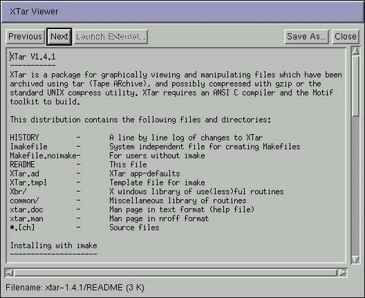

XTar - File Viewer
The XTar File Viewer, is a built-in browser, for displaying selected files. Text files are displayed in the main window but external applications can be launched to handle any file types externally (such as a GIF viewer). The external file viewers are configured using XTar's resources.

The status line at the bottom of the viewer displays the currently opened file - this is the full pathname as it appears in the archive. Use the toolbar to navigate backwards and forwards through any selected files and to save a copy of the current file locally.
Previous, displays the previous document displayed.
Next, displays the next selected file - the files are displayed in the order they are stored in the archive.
Launch External..., if a file has an association to an external program, then the command line to launch the program will appear in the main window. Click this button to run the command.
Save As..., allows you to save the file to another location - select the location in the file dialog box that appears.
Close, closes the viewer.
Every time a viewer is launched XTar creates a temporary directory and extracts selected files to that directory for viewing. You may open as many viewers as you like but be aware that XTar will create a new directory for each viewer, so watch your disc space usage. When a file viewer is closed, it's associated temporary directory is deleted.